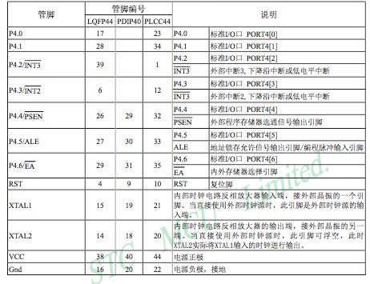

最后更新于：2022年6月25日 下午
这里记录一些我的新玩具: 51 单片机 的基础常识，作为初学者，下文必然是错误百出。
很久没更新博客了,毕竟很久没写程序了。数学类的嵌套的定义又太多，很不好写。
新玩具
这次淘宝买的新玩具是：HC6800-ES V2.0 开发版，内部单片机是 STC89C52。见下图

作为小白看了一下视频，但是呢，感觉视频什么的太慢，还是看书看手册来的爽。安装好单片机版 C 语言的 IDE Keil4 以及烧录软件之后，装一下开发版驱动，就可以在不知道单片机原理的情况下轻松的控制单片机了。例如什么 LED 灯闪烁，跑马灯，等等很基础的程序。
下面是单片机的管脚图和说明：



从图上看知道 P0,P1,P2,P3 是重要的 I/O 口，例如我们把 P2 接到 LED 灯，那么给低电平 0，就可以使灯亮。还有 P0，P1 不仅可以作为 I/O 口，还可以作为地址，计时器、计数器来用。还有 P3，等等。由于我用的是开发版，每个口接什么基本上已经固定了，用的时候查相应的官方资料就行了。它也提供了很多程序例子，因此还是很好掌握的，只是要记点东西才能灵活操作它。
HC6800-ES-VS2.0 常见管脚接法
P2 口 8 个位接了 8 个 LED 灯，至 0 灯亮。
P1.5 接了蜂鸣器。循环至 0 至 1 发声。
P3.0 ~ P3.3 接了独立键盘（不过开发版上竟然接反了 K1 和 K2），使用按键的时候要软件消除抖动，一般延迟 10ms 来完成。
通过 P1 的数据，来判断矩阵键盘按的键。（见下图)
数码管使用 P0, 通过 LSA=P2.2, LSB=P2.3, LSB=P2.4 的 0-1 指来控制显示的地方。
常用定时器和中断标程。
1602 液晶显示
这个虽然很复杂，但是生产该显示屏的会提供lcd.h和lcd.c然后我们只要先初始化 LCD：LcdInit()再执行字节输出函数：LcdWriteData(char c)即可。
程序示例
程序功能: 按下 k1 键 LED 跑马灯，K2 蜂鸣器发生，K3 数码管显示 1-8。由于不会中断，所以跑马灯写的很挫。
1
2
3
4
5
6
7
8
9
10
11
12
13
14
15
16
17
18
19
20
21
22
23
24
25
26
27
28
29
30
31
32
33
34
35
36
37
38
39
40
41
42
43
44
45
46
47
48
49
50
51
52
53
54
55
56
57
58
59
60
61
62
63
64
65
66
67
68
69
70
71
72
73
74
75
76
77
78
79
80
81
82
83
84
85
86
87
88
89
90
91
92
93
| #include <reg52.h>
#include <intrins.h>
typedef unsigned int u16;
typedef unsigned char u8;
#define led P2
sbit k1=P3^1;
sbit k2=P3^0;
sbit k3=P3^2;
sbit LSA=P2^2;
sbit LSB=P2^3;
sbit LSC=P2^4;
sbit beep=P1^5;
u8 beepS,i,ledState = 0, DigState = 0;
u8 code smgduan[17] = {0x3f,0x06,0x5b,0x4f,0x66,0x6d,0x7d,0x07,
0x7f,0x6f,0x77,0x7c,0x39,0x5e,0x79,0x71};
void delay(u16 t){
while(t--);
}
void ledStart(){
ledState = 1;
led=0xfe;
for(i=0;i!=7;++i){
led = _crol_(led,1);
delay(50000);
}
}
void ledStop(){
ledState = 0;
led = 0xff;
}
void DigDisplay(){
DigState = 1;
for(i=0;i<8;i++){
switch(i){
case(0):
LSA=0;LSB=0;LSC=0; break;
case(1):
LSA=1;LSB=0;LSC=0; break;
case(2):
LSA=0;LSB=1;LSC=0; break;
case(3):
LSA=1;LSB=1;LSC=0; break;
case(4):
LSA=0;LSB=0;LSC=1; break;
case(5):
LSA=1;LSB=0;LSC=1; break;
case(6):
LSA=0;LSB=1;LSC=1; break;
case(7):
LSA=1;LSB=1;LSC=1; break;
}
P0=smgduan[i];
delay(50000);
}
}
void DigStop(){
DigState = 0;
P0 = 0x00;
}
void keyPress(){
if(k1==0){
delay(1000);
if(k1==0){
if(ledState==0) ledStart();
else ledStop();
}
while(!k1);
}
if(k2==0){
delay(10);
if(k2==0){
beepS=10;
while(beepS<200){
beep=~beep;
delay(beepS);
++beepS;
}
}
while(!k2);
}
if(k3==0){
delay(10);
if(k3==0){
if(DigState == 0) DigDisplay();
else DigStop();
}
while(!k3);
}
}
void main(){
while(1) keyPress();
}
|